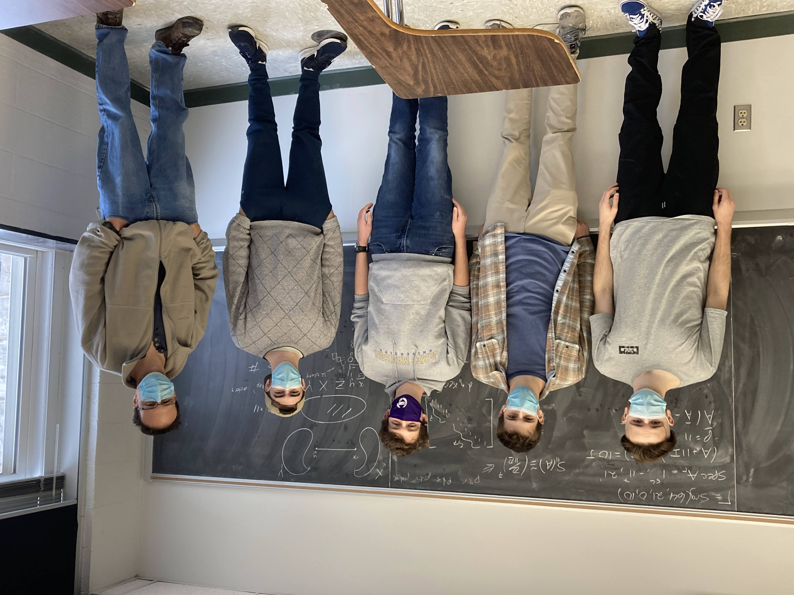

In Fall 2021 I ran a high-level undergraduate research course, Math 485: Open Research Problems in Mathematics. The students involved were Dominic Gammino, Michael Michniak, William Nettles, and Colby Sherwood, all from JMU.

The course went on for 16 weeks; here is a sample of the variety of topics we looked at:
- Background mathematical material. Modules over various rings, a review of linear algebra, basic algebraic graph theory (for example, Kirchoff's matrix tree theorem).
- Problems concerning strongly regular graphs. The Smith normal form of matrices in their Bose-Mesner algebra. One of the main results of our work was a description of the p-primary components of the Smith group of matrices associated with a strongly regular graph, under certain conditions on the graph's parameters.
- Application of the above theory to prove non-existence of strongly regular graphs with certain parameters. For example, we managed to show that no strongly regular graph with parameters (64, 21, 0, 10) can exist.
- We looked at some open problems concerning existence of strongly regular graphs, such as whether there exists a strongly regular graph with parameters (99, 14, 1, 2) (this is Conway's 99-graph problem), and we also investigated the longstanding problem concerning the missing Moore graph. We spent a lot of time on this as there are various connections with finite geometry; in particular, we explored connections between Moore graphs and the Klein quadric in 5-dimensional projective space.
- We looked in detail at a theorem of Thompson about the interlacing of invariant factors of matrices, and applied this to deduce information about a strongly regular graph and its induced subgraphs. This interlacing idea is a basic tool in algebraic graph theory using eigenvalues, but I have never before seen it used with integer invariants, as we did.
- We looked at other problems related to Smith normal form of integer matrices, such as the description of the sandpile groups of various graphs, and in particular the n-dimensional hypercube graph. We spent a lot of time reading research papers about this. We tried many things, such as alternative ways of embedding the hypercube in Euclidean space and examining how the various matrices of the graph act on the monomial basis with respect to these embeddings.
- We also looked at some very recent open problems and trends in algebraic graph theory related to quantum computation, such as the problem of finding graphs in which perfect state transfer or uniform mixing occur. We investigated the interesting unsolved problem of whether any trees besides the paths P_2 and P_3 achieve perfect state transfer.
- We did a great deal of computation in SAGE to help us form conjectures, and get an idea of what was going on.
The students worked very hard and made progress in several problems, especially concerning invariants of strongly regular graphs. Have a look at their report of their activities.
The students also gave a nice talk at SUMS (online).
Back to my homepage